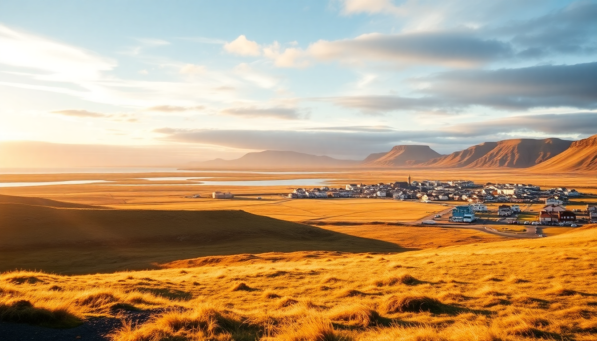

Best Day Trips from Akureyri: Mývatn, Dettifoss & Húsavík

I spent three days based in Akureyri, using the town as a hub to hit three very different spots: the bubbling lunar landscape of Mývatn, Europe’s most powerful waterfall at Dettifoss, and the charming whale-watching port of Húsavík. Each trip is doable in a single day from Akureyri if you plan the driving right. Here’s exactly how I did it, what I’d skip, and what I’d do again.
Can you visit Mývatn, Dettifoss, and Húsavík in one day?
Technically yes, but I wouldn’t recommend it. I tried to cram all three into a single long day and ended up rushing through Dettifoss just as the light went flat. Instead, pick two per day and leave breathing room.
The driving distances are manageable: Akureyri to Mývatn is about 90 minutes on Route 1 (the Ring Road). From Mývatn to Dettifoss is another 45 minutes east on Route 864. Húsavík sits northwest of Mývatn, about an hour’s drive on Route 85. A better split is:
- Day 1: Mývatn area (geothermal sites + hiking) and then Dettifoss in the late afternoon
- Day 2: Húsavík (whale watching + lunch) and maybe a quick stop at Goðafoss waterfall on the way back
I did Day 1 as described, then drove back to Akureyri for dinner. Day 2 I started early with the 9 AM whale-watching tour from Húsavík, grabbed fish and chips at Salka on the harbor, and drove back via Goðafoss—which honestly rivals Gullfoss in beauty without the crowds.
What are the must-see stops around Mývatn?
Mývatn isn’t a single attraction—it’s a collection of geological oddities spread around a shallow lake. I spent a full morning and early afternoon here and still felt I could have used more time.
Start at the Dimmuborgir lava fields. These twisted black rock formations look like a collapsed fortress. The “Church” formation (Kirkjan) is the most photographed spot, but I liked the quieter trails looping behind it. Walk the full 2.5 km circle—it only takes 40 minutes.
Next, drive five minutes to Hverfjall, a perfectly symmetrical tephra crater. The hike to the rim is steep but short (15 minutes). From the top, you see the entire lake and the Krafla volcano in the distance. I went up at noon and had the trail mostly to myself.
- Námafjall geothermal area (just south of Mývatn): boiling mud pots and sulfur vents. Strong smell, but worth a 10-minute stop. Park in the lot across from the Námafjall Geo Café.
- Krafla and Viti crater: a short drive north. Viti is a bright blue geothermal lake inside a crater. The walk around the rim takes 20 minutes.
- Mývatn Nature Baths: quieter and cheaper than the Blue Lagoon. I skipped it because I preferred the free natural hot springs at Grjótagjá cave (the Game of Thrones filming spot), but the water there fluctuates—it was 48°C when I visited, too hot to soak.
For lunch, I stopped at Vogafjós Farm Resort—a working dairy farm with a glass-walled cafe overlooking the cows. The smoked lamb sandwich and homemade skyr were excellent. No reservations needed for lunch seating.
How do you get to Dettifoss and which side is better?
Dettifoss sits in the northeast corner of Vatnajökull National Park. The waterfall is 100 meters wide and drops 44 meters—the sheer volume of water is what makes it feel so violent. You can access it from two sides: the west bank (Route 862) or the east bank (Route 864). Most people go west because it’s paved and leads directly to the main viewing platform.
I went east on purpose. The road (Route 864) is a gravel track—rough but doable in a standard 2WD rental if you go slow. The payoff: you walk right to the edge of the canyon at Selfoss (a smaller but stunning upstream waterfall) before reaching Dettifoss. The path from the east parking lot to Dettifoss is a flat 1 km walk. You get drenched by spray, so wear a waterproof jacket and cover your camera lens.
- West bank (Route 862): paved, easier, more crowded. The main platform gives you a head-on view.
- East bank (Route 864): gravel, fewer people, closer to the water. I preferred the angle here—you feel the spray and the rumble in your chest.
- Selfoss waterfall: a 10-minute walk upstream from Dettifoss. Less dramatic but more photogenic. I had it to myself for 20 minutes on a Tuesday afternoon.
Parking is free at both sides. There are no services or shops—bring water and snacks. The entire visit (both falls) took me about 1.5 hours.
Is Húsavík worth the drive from Akureyri?
Yes, but only if you do a whale-watching tour. Húsavík is a small fishing town of about 2,300 people, and the main draw is the bay—one of the best places in Europe to see humpback and blue whales. I booked a 3-hour tour with North Sailing from the old harbor. Their boats are wooden schooners, which felt more authentic than the big catamarans.
We saw six humpbacks within the first hour. The guides from North Sailing are knowledgeable and patient—they cut the engine and let the whales surface naturally. One breached about 50 meters from the boat. I’ve been whale-watching in Norway and Canada, and this was the best experience.
- Húsavík Whale Museum: worth an hour if you have kids or want context. I skipped it to stay on the water longer.
- Geosea Geothermal Sea Baths: infinity pool overlooking the Arctic Ocean. I didn’t go, but a couple I met at dinner said it was better than Mývatn Nature Baths because of the view.
- Salka (harbor-side): the fish and chips are solid—fresh cod, crispy batter, good tartar sauce. Portions are large.
The drive from Akureyri to Húsavík takes about 1 hour 15 minutes on Route 85. The road hugs the coast for most of it, with views of Eyjafjörður fjord. On the way back, stop at Goðafoss—a 30-meter-wide horseshoe waterfall that locals call the “Waterfall of the Gods.” It’s right off Route 1, free to visit, and usually not crowded in the late afternoon.
What’s the best time of year for these day trips?
I went in early June, which was ideal. The roads were clear of snow (most gravel routes open by late May), the midnight sun meant I could hike until 10 PM, and the birdlife at Mývatn was in full swing. Drawbacks: mosquitoes at Mývatn can be thick in June and July. I wore a head net and long sleeves and still got bitten.
- June to August: best weather, long daylight, all roads open. Crowds at Dettifoss and Mývatn are moderate—nothing like the Golden Circle.
- September to October: fewer bugs, autumn colors around Mývatn, but whale watching in Húsavík winds down by mid-September.
- November to April: roads to Dettifoss and the east side of Mývatn are often closed. Húsavík whale tours stop in October. You could still visit Akureyri and the west side of Mývatn (Route 1 stays open), but you’ll miss the best parts.
I would not attempt the east-bank gravel road to Dettifoss in winter without a 4x4. Even in June, I saw a rental sedan stuck in a mud patch near the parking lot.
FAQ
Can I do these trips with a rental car from Akureyri? Yes, a standard 2WD car is fine for all routes except the east side of Dettifoss (Route 864) in wet weather. I rented from Europcar at Akureyri Airport—they were straightforward, no hidden fees. For winter or if you want peace of mind, get a 4x4. Fuel is easy to find: there’s an N1 station in Mývatn town and another in Húsavík.
How much time should I budget for each stop? Mývatn area needs at least 4 hours if you want to see Dimmuborgir, Hverfjall, Námafjall, and Krafla. Dettifoss + Selfoss takes 1.5–2 hours including the walk. Húsavík whale watching is 3 hours on the water, plus 1–2 hours for lunch and walking around. Plan for 8–10 hours total if you do two stops in one day.
Are there any guided tours from Akureyri to these places? Yes, but I preferred driving myself for flexibility. Troll Expeditions runs a full-day Mývatn + Dettifoss tour from Akureyri that includes pickups and lunch. For Húsavík, North Sailing offers a combo tour from Akureyri that includes bus transfer and the boat trip. I checked prices—self-driving saved about 30%, and I could skip stops I wasn’t interested in.
Conclusion
- Base yourself in Akureyri and split these trips across two days—Mývatn + Dettifoss on one, Húsavík + Goðafoss on the other.
- Drive the east bank of Dettifoss (Route 864) for fewer crowds and a closer view, but only in summer with a 2WD or any time with a 4x4.
- Book North Sailing for whale watching in Húsavík—the wooden boats and experienced guides make the difference.
- Eat lunch at Vogafjós Farm Resort near Mývatn and grab fish and chips at Salka in Húsavík.
- Visit in June or July for the longest daylight and best road conditions, but bring a mosquito head net for Mývatn.